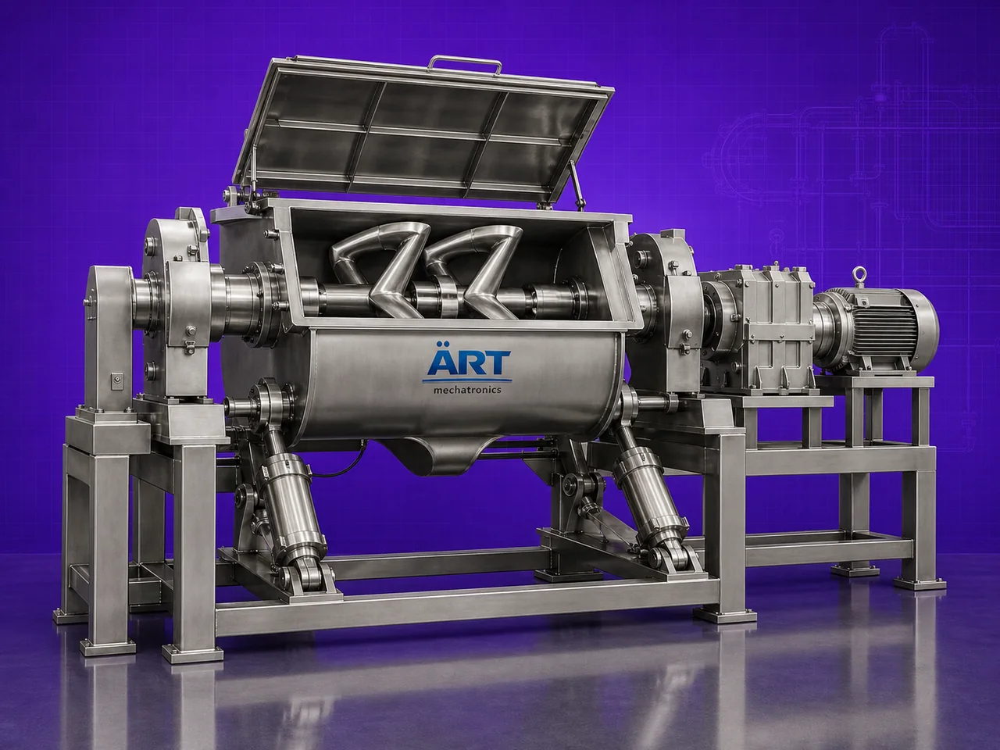

Sigma Mixer Machine (Industrial Double Arm Kneading & High Viscosity Mixing System)
A Sigma Mixer Machine, also known as a Sigma Kneader, Double Arm Kneader, or Heavy Duty Paste Mixer, is a specialized industrial mixing equipment designed for intensive kneading, blending, folding, crushing, and mixing of high-viscosity materials such as dough, paste, rubber compounds, adhesives, putty, resins, gums, and thick formulations.

About the Sigma Mixer
The machine uses two specially designed Sigma-shaped mixing blades rotating inside a heavy-duty mixing trough. These blades create:
- Powerful kneading action
- Shearing and folding motion
- Uniform blending
- High torque mixing
- Efficient processing of dense materials
Sigma mixers are widely used in industries such as:
• Food processing
• Pharmaceuticals
• Chemicals
• Adhesives
• Rubber & polymer industries
• Cosmetics
• Ceramics
• Battery materials
• Construction materials
where heavy-duty mixing and handling of thick, sticky, and viscous materials are essential.
The machine is highly suitable for:
- Dough kneading
- Paste mixing
- Resin blending
- Putty preparation
- Rubber compound mixing
- Adhesive manufacturing
- High-density material processing
ART Mechatronics offers high-performance sigma mixer machines, engineered for powerful kneading action, heavy-duty industrial operation, energy efficiency, and reliable long-term performance.
One machine, many names
Buyers search for this equipment under many terms — we manufacture all of them:
Working Principle of Sigma Mixer Machine
Ensures intensive mixing of dense materials
Types of Sigma Mixer Machines
Industries Using Sigma Mixer Machine
🍃 Food Processing Industry
- Dough and paste preparation
💊 Pharmaceutical Industry
- Ointment and formulation mixing
⚗️ Chemical Industry
- Resin and adhesive blending
🧼 Cosmetic Industry
- Cream and paste processing
🛞 Rubber & Polymer Industry
- Rubber compound mixing
🔋 Battery Material Industry
- Electrode paste mixing
🏗️ Construction Material Industry
- Putty and sealant preparation
Features & Advantages
- Powerful kneading and mixing action
- Suitable for high-viscosity and sticky materials
- Heavy-duty industrial construction
- Uniform blending and consistency
- High torque processing capability
- Optional heating and cooling jacket
- Vacuum mixing option available
- Low maintenance and reliable operation
- Hygienic and easy-to-clean design
Technical Highlights
- Capacity: Small batch to large industrial scale
- Mixing Type: Double Sigma blade kneading action
- Construction: Stainless Steel / Mild Steel
- Discharge System:
- Tilting discharge
- Bottom discharge
- Extruder discharge
- Heating/Cooling: Optional jacketed system
- Operation: Manual / Automatic / PLC-based
Turnkey Kneading & Mixing Solutions
ART Mechatronics offers:
- Complete sigma mixer system design
- Heating and cooling integration
- Vacuum mixing systems
- Extruder discharge integration
- Automation and process control
- Installation & commissioning
- After-sales service & AMC
Why Choose Art Mechatronics
- Expertise in high-viscosity industrial mixing systems
- Customized solutions for multiple industries
- Heavy-duty and reliable machine construction
- Hygienic and energy-efficient designs
- Proven industrial performance
Applications
- Food Processing Plants
- Pharmaceutical Manufacturing Units
- Chemical Processing Industries
- Cosmetic Manufacturing Facilities
- Rubber & Polymer Processing Plants
- Battery Material Processing Units
Industries that use the Sigma Mixer
Related Mixing & Blending machines
Get pricing & specs for the Sigma Mixer
Share the product, target capacity, current process and plant location. These details help our engineers discuss the right machine or line configuration.
One partner, from design to start-up
ART Mechatronics designs, manufactures, installs and commissions your Sigma Mixer solution with regional presence in India, UAE and Thailand.